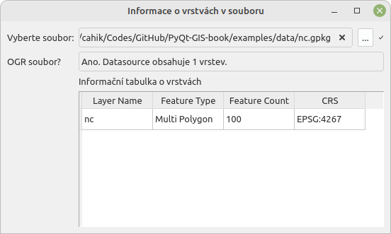

from typing import Optional
from osgeo import ogr
from PyQt5.QtCore import QAbstractTableModel, QObject, QModelIndex, Qt
class TableModel(QAbstractTableModel):
def __init__(self, datasource: ogr.DataSource, parent: Optional[QObject] = None) -> None:
super().__init__(parent)
self._ds = datasource
def set_ds(self, ds: ogr.DataSource) -> None:
self._ds = ds
self.layoutChanged.emit()
def rowCount(self, parent: QModelIndex = QModelIndex()) -> int:
if parent == QModelIndex() and self._ds:
return self._ds.GetLayerCount()
return 0
def columnCount(self, parent: QModelIndex = QModelIndex) -> int:
if parent == QModelIndex():
return 4
return 0
def headerData(self, section: int, orientation: Qt.Orientation, role: Qt.ItemDataRole):
if role == Qt.DisplayRole:
if orientation == Qt.Horizontal:
if section == 0:
return "Layer Name"
elif section == 1:
return "Feature Type"
elif section == 2:
return "Feature Count"
elif section == 3:
return "CRS"
return None
def data(self, index: QModelIndex, role = Qt.ItemDataRole) -> str:
if role == Qt.DisplayRole:
layer: ogr.Layer = self._ds.GetLayer(index.row())
if index.column() == 0:
return layer.GetName()
elif index.column() == 1:
return ogr.GeometryTypeToName(layer.GetGeomType())
elif index.column() == 2:
return layer.GetFeatureCount()
elif index.column() == 3:
crs: osr.SpatialReference = layer.GetSpatialRef()
authority = crs.GetAuthorityName(None)
code = crs.GetAuthorityCode(None)
if authority and code:
return "{}:{}".format(authority, code)
else:
crs.ExportToWkt()
else:
return ""
return None10 Qt Architektura Model View
V Kap. 4 byly ukázány základní prvky GUI. Zatímco jednoduché prvky (např. tlačítka) fungují samy o sobě, bez interakce na další datové objekty, prvky zobrazené na Obr. 4.3 jsou komplexnější a jejich obsah často závisí na jiných objektech či datech. Pomocí QListView lze zobrazovat například tabulky v databázi, QTreeView může sloužit pro zobrazení adresářové struktury a QTableView může zobrazovat data uložená např. v CSV souboru nebo v PostgreSQL tabulce. Ačkoliv Qt poskytuje možnosti jak může programátor tyto položky vytvářet přímou interakcí s jednotlivými položkami v těchto třídách. Jedná se o třídy QListWidget, QTreeWidget a QTableview. Tyto třídy jsou vizuálně shodné s třídami dříve jmenovanými, ale odlišují způsobem jakým se pracuje s obsahem těchto tříd. Přímá interakce s položkami těchto tříd se ale obvykle velice rychle stane pro programátora příliš náročná a náchylná na chyby (Fitzpatrick (2019)).
Při tvorbě aplikací se pro oddělení dat od jejich prezentace a zpracování používá návrhový vzorec Model-View-Controller (zkr. MVC). V případě Qt je tento návrhový vzorec upraven. Položky View a Control jsou efektivně sloučeny, nicméně stále zůstávají oddělená data od jejich prezentace a editace (Fitzpatrick (2019)). Bylo by tak možné označit způsob implementace jako **Model-View*. Pro využití to znamená, že prezentační třídy (QListView, QTreeView a QTableView) vyžadují, aby jim byla data předána pomocí standardizovaných rozhraní tzv. modelů. Modely jsou v praxi třídy, které jsou odvozené ze specifických abstraktních tříd Qt a musejí implementovat specifické funkce. Na základě těchto funkcí, jsou pak prezentační třídy schopné automaticky prezentovat data. Tím odpadá uživateli nutnost řešit jednotlivé položky v daném prvku. Pouze se vytvoří “modelovací” třída, která specifikuje, jak se vstupní prvky (ať už jsou jakékoliv) přeloží na prezentační data pro dané View.
Tento koncept bude nejjednodušší demonstrovat na jednoduchém příkladu. Vytvoříme QTableView, a k ní příslušný model, který pro vstupní data, což bude zdroj vektorových dat, který lze načíst skrze OGR, zobrazí informace o jednotlivých vrstvách v daném souboru.
10.1 Příklad
Výchozí třídou pro model bude v tomto případě QAbstractTableModel, což je model pro QTableView, v případě jiného typu View by se volil jiný výchozí model. Pro základní funkčnost je nutné nadefinovat ve vytvořené třídě chování tří funkcí rowCount(), columnCount() a data(). Doplňkově ještě vytvoříme třídu headerData(), aby výsledná tabulka měla správné záhlaví a set_ds(), která nám umožní snadno změnit zdroj dat v modelu.
Při vytváření třídy předáme konstruktoru objekt třídy ogr.DataSource, ze kterého budeme získávat vrstvy. Stejně tak stejný objekt předáme funkci set_ds(), abychom v modelu aktualizovali zdroj dat, tato funkce mimo jiné spustí signál layoutChanged, který povede k aktualizaci zobrazených dat.
Funkce rowCount() a columnCount() slouží k určení velikosti zobrazované tabulky. Počet sloupců je fixní, budou vždy 4 a počet řádku se řídí počtem vrstev v datovém zdroji.
Ve volání funkcí se objevují prvky typu Qt.ItemDataRole, pomocí modelů lze ovlivňovat řadu vizuální položek týkajících se prvků v daném View, pro základní potřeby je dostačující položka Qt.DisplayRole, což je vlastně zobrazovaný text.
Ve funkcích headerData() a data() specifikujeme konkrétní data, která se budou zobrazovat v příslušných umístěních v tabulce. Výsledná třída modelu pak vypadá následovně.
Ve výsledném GUI pak vytvoříme model a předáme ho zobrazujícímu widgetu (proměnná self.ds zde udržuje načtený objekt ogr.Datasource):
self.table_model = TableModel(self.ds)
self.table = QTableView(self)
self.table.setModel(self.table_model)Kód výsledné aplikace vypadá následovně model-view.py.
